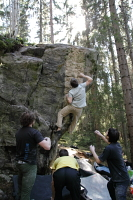
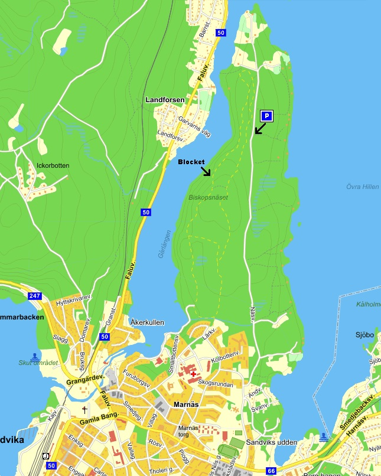
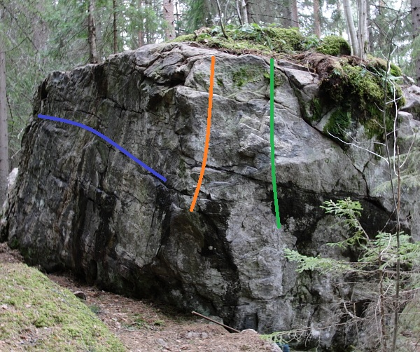
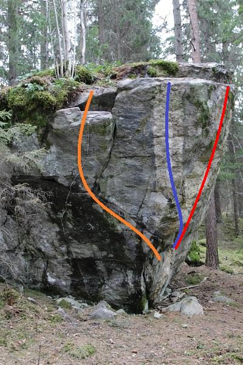
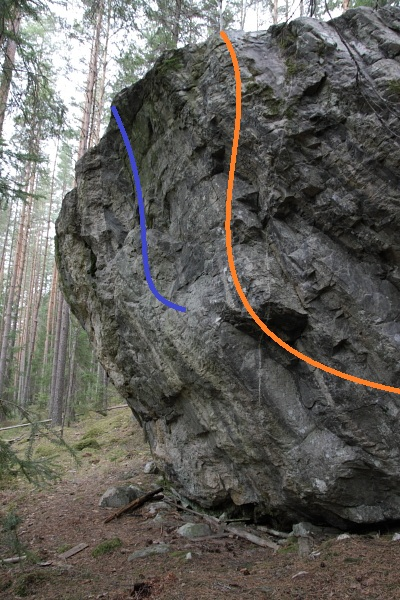
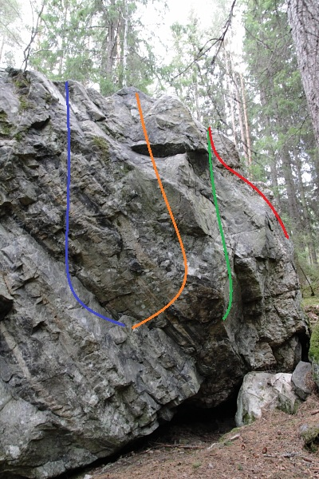

Biskopsnäset
Allmänt

Hjälp till att justera in graderna!
|}
Vägbeskrivning
Ta Näsvägen ut på biskopsnäset och parkera vid den tydliga breddningen av vägen, vid det lilla kalhygget. Se till att det finns plats kvar för stugägarna. Ta stigen ut till spåret och följ det söderut. Korsa över till andra sidan spåret när möjlighet ges och fortsätt söderut. Vid 1,5km-skylten tar man av ner mot sjön för att komma till blocket.
<center>

</center >
Biskopsnäsblocket
<center>

</center >
-
- Värme
- 5B
- Lite klurigare än vad den ser ut att vara. Klättras i valfri riktning. Blå linje.
-
- Relapse
- 5C
- Catchigt på sköna sloperhyllor. Greppen till vänster hör inte till problemet. För varianten "Återfall", 6A, så catchar man med högerhanden. "Off the Wagon", 6A+, är samma problem utan den övre sloperhyllan. Orange linje.
-
- Bakåtfall
- 6C?
- Sittstart vid de sneda kimparna. Klättra rakt upp. Grön linje
-
- ?
- 6C?
- Låg start från krimpar i den horisontella sprickan. Catcha upp till vänster till jug i spricka. Till höger om grön linje
<center>

</center >
-
- Hemma
- 6A+
- Lågstart/sittstart långt ut till höger på sloperhyllan. Orange linje.
-
- Hemma ss
- 6C-7A?
- Sittstart vid arêten. Den fina pinchen används lämpligen som startgrepp för vänsterhanden. Orange linje.
-
- Vattenlinje
- 7A+/7B
- Börjar med Hemmas sittstart. Traversera vänster och avsluta med Bakåtfall.
-
- Prästkrage ss
- 7B
- Sittstart vid bra grepp under överhänget. Upp snett över arêten för urtoppning. Blå linje.
-
- Bida sin tid
- 7C
- Rakt upp vid överhänget. Röd linje
-
- Bida sin tid sds
- 7C+/8A
- Sittstart vid bra grepp under överhänget. Klättra rakt upp. Röd linje
<center>

Blockets högsta sida. 4,5-5m högt
</center >
-
- Lugna sig lite
- 6B
- Ståstart från krimpar. Gå snett upp åt vänster och fortsätt rakt upp över de stora greppen. Blå linje.
-
- (Projekt)
- 7?
- Alternativt insteg till Lugna sig lite. Etablera/sittstarta nere till vänster om de stora greppen och klättra in i blå linje.
-
- Ynkrygg
- 6C
- Ståstart från "näsan" och rakt upp. Orange linje.
-
- Ynkrygg ss
- 6C+-7A?
- Sittstart från den bra krimpen under rampen. Ovansidan av rampen är utesluten. Orange linje.
<center>

</center >
-
- Peta näsan
- 6B
- Sittstart vid de bra greppen. Klättra vänster och fortsätt uppåt från underclingen. Blå linje.
-
- Slutet gott..
- 6A+
- Sittstart vid de bra greppen. Gå höger till arêten och fortsätt rakt upp i vänstra diedret. Orange linje.
-
- Glöm inte
- 6A
- Sittstart under arêten. Gå snett upp åt höger och rakt upp i högra diedret. Grön linje.
-
- ?
- 4
- Börja längst ut åt höger och följ kanten/toppen åt vänster. Röd linje.
Kategori:Utkast
Kategori:Ludvika
Kategori:Bouldering
Kategori:Bimbo
Kategori:Saknar karta
Kategori:Saknar skrivarformattering
Kategori:Saknar skiss
Kategori:Dalarna